Butchery
CAP Boucher. Sixteen English words of the trade: tools, objects and everyday gestures. Open to everyone.
Four steps: from French to English, listen and choose, match, and complete a sentence at work. The Listen button reads the word in British English.
Word list
| Image | Français | English | Audio |
|---|---|---|---|
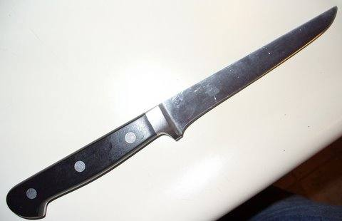 | le couteau à désosser | boning knife | |
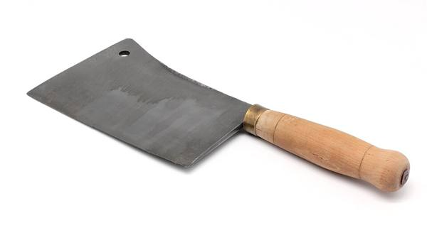 | le couperet | cleaver | |
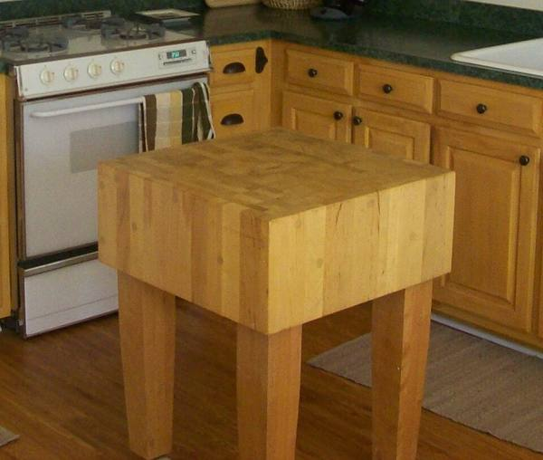 | le billot | chopping block | |
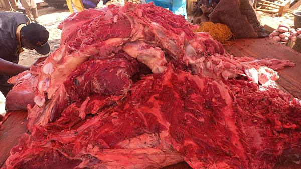 | la viande | meat | |
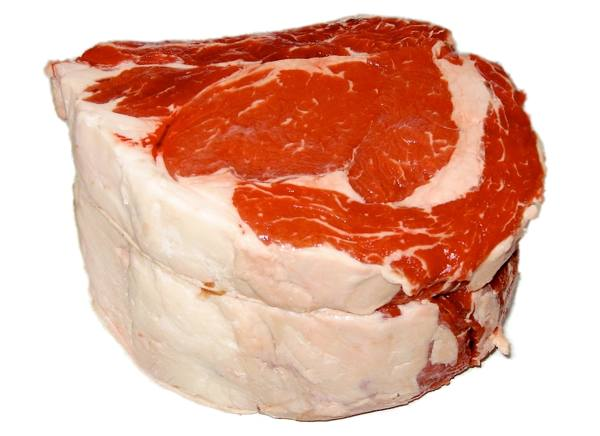 | le bœuf | beef | |
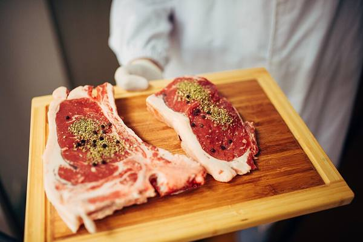 | le porc | pork | |
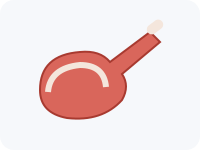 | l'agneau | lamb | |
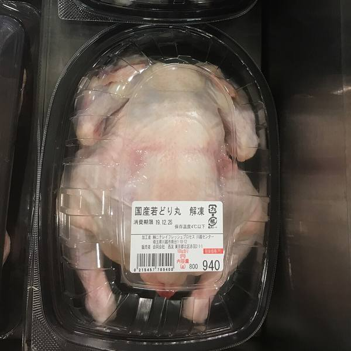 | le poulet | chicken | |
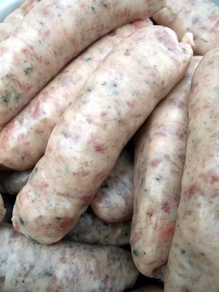 | la saucisse | sausage | |
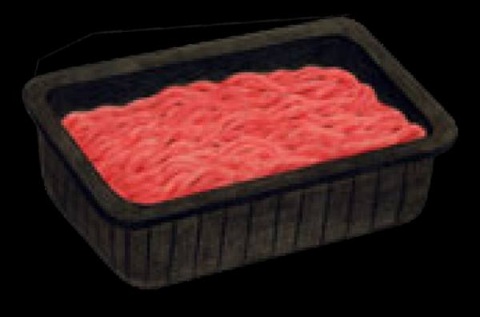 | la viande hachée | mince | |
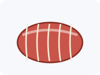 | le rôti | joint | |
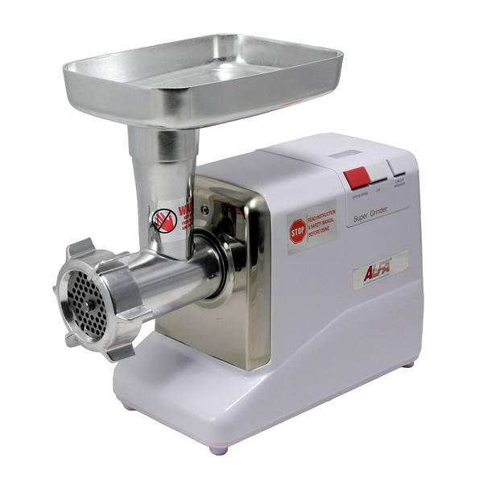 | le hachoir | mincer | |
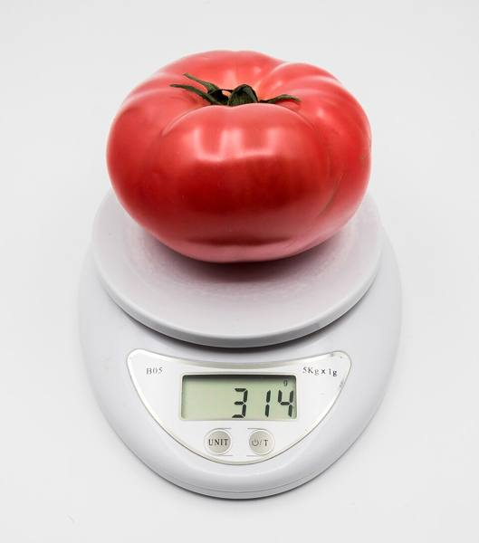 | la balance | scales | |
| le gant en cotte de mailles | chain-mail glove | ||
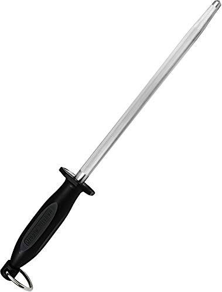 | le fusil à aiguiser | sharpening steel | |
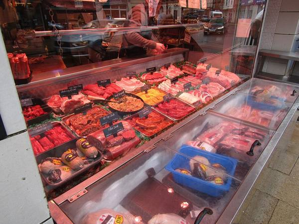 | le comptoir | counter |
Teacher key: sentences at work
- Sharpen the knife with the ________. (sharpening steel)
- Wear a ________ to protect your hand. (chain-mail glove)
- Make the mince with the ________. (mincer)
- Cut the bones with the ________. (cleaver)
- Weigh the meat on the ________. (scales)
- I would like a ________ of beef for Sunday. (joint)
In steps 1, 2 and 3, the right answer is the line in the word list.
Image credits
Photos under an open licence, from Wikimedia Commons, resized for the phone. Original drawings for gestures and ideas.
- le couteau à désosser (boning knife) : photo by MrDarcy at English Wikipedia, licence Public domain, file page on Wikimedia Commons.
- le couperet (cleaver) : photo by Coyau, licence CC BY-SA 3.0, file page on Wikimedia Commons.
- le billot (chopping block) : photo by Anthony Crider, licence CC BY 2.0, file page on Wikimedia Commons.
- la viande (meat) : photo by Halima Waziri, licence CC BY-SA 4.0, file page on Wikimedia Commons.
- le bœuf (beef) : photo by Michael C. Berch, aka MCB at en.wikipedia, licence CC BY-SA 2.5, file page on Wikimedia Commons.
- le porc (pork) : photo by Shixart1985, licence CC BY 2.0, file page on Wikimedia Commons.
- l'agneau (lamb) : original drawing, Itinéraires et destinations, CC BY-NC-SA 4.0.
- le poulet (chicken) : photo by Nesnad, licence CC BY 4.0, file page on Wikimedia Commons.
- la saucisse (sausage) : photo by Téléversé par Salimfadhley (Wikimedia Commons), licence CC BY-SA 3.0, file page on Wikimedia Commons.
- la viande hachée (mince) : photo by U.S. Department of Health and Human Services, licence Public domain, file page on Wikimedia Commons.
- le rôti (joint) : original drawing, Itinéraires et destinations, CC BY-NC-SA 4.0.
- le hachoir (mincer) : photo by Jollymon001, licence CC BY-SA 4.0, file page on Wikimedia Commons.
- la balance (scales) : photo by Jacek Halicki, licence CC BY-SA 4.0, file page on Wikimedia Commons.
- le gant en cotte de mailles (chain-mail glove) : original drawing, Itinéraires et destinations, CC BY-NC-SA 4.0.
- le fusil à aiguiser (sharpening steel) : photo by Rosemarie Bennett, licence CC0, file page on Wikimedia Commons.
- le comptoir (counter) : photo by Kolforn, licence CC BY-SA 4.0, file page on Wikimedia Commons.
Vocabulary sheet to print
Large type (16 point minimum), in three formats: